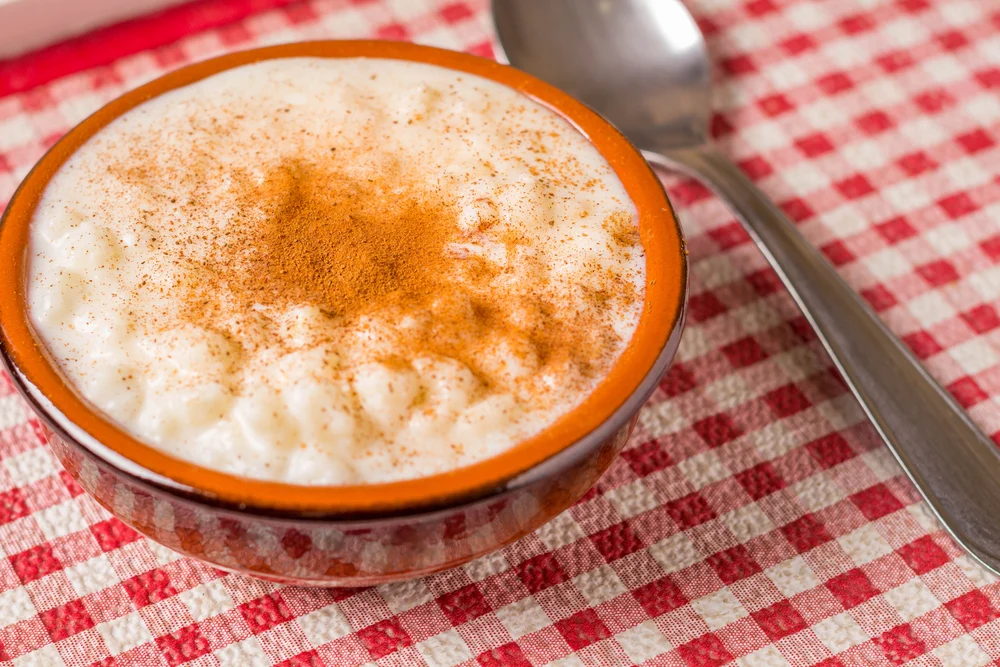

Munguzá

Description
Ingredients
- 1 – 110 oz can hominy, drained
- 1 ½ Cup whole milk
- 1 Cup unsweetened coconut milk
- ½ Tsp. ground cinnamon
- ½ Tsp. ground clove
- ¼ Cup sugar
- ¼ Tsp. salt
- Condensed milk, optional
Steps
- Place hominy, milk, coconut milk, spices, salt, and sugar in a saucepan and simmer over medium heat until thickened, about 15-20 minutes.
- Optional: Serve with a drizzle of condensed milk.